-
Quantum Dots 2D Micropatterning: Biofunctionnalization & NEF imaging
Full text of the manuscript (french) is available here or here.
Optical imaging is an important field of research in the life sciences, especially in cell biology. The characteristic sizes of the phenomena involved are very diverse: mammalian cell sizes typically range from 1 to 100 µm in diameter, the order of magnitude of protein sizes is more like nm. Thus, one of the important challenges of contemporary imaging in cell biology is to access information related to phenomena of nanometric dimensions, while maintaining an overview of the cells and thus a wide field of observation.
In the case of cell adhesion and migration, the fine understanding of these bio-physical-chemical phenomena requires tools that allow to account for the articulation between protein interactions and the global behavior of the cell, which emphasizes the dynamic aspects of adhesion. However, the techniques currently used allow the study of one or several aspects of the phenomenon, but at the cost of sometimes very important compromises. For example, with classical optical microscopy, such as phase contrast, access to global behaviors is allowed thanks to the large field of observation and high acquisition speed, but the precise study of adhesion zones is impossible because of the limit of resolution due to diffraction (∼250 nm in the visible). In contrast, modern methods beyond the diffraction limit are limited in terms of field of view, accessible temporal dynamics, and, more crucially, are generally incompatible with the study of living cells due to the high excitation irradiances used.
Non-radiative Excitation Fluorescence (NEF) imaging is a proposed technique within the family of optical methods used to study cell adhesion, which aims to overcome the diffraction limit. Based on the phenomenon of non-radiative energy transfer of the Förster type (FRET), NEF imaging aims to give access to the spatio-temporal dynamics of adhesion focal points of living cells. This technique is based on the use of glass surfaces made "optically active" via their functionalization by quantum dots (QDs). The latter play the role of donors in the context of FRET – Figure 0.1. This short-range transfer phenomenon – a few nm – then allows the detection of fluorescent molecules when they are in close proximity to the substrate – Figure 0.2. In previous works, the Nanobiotophotics team at the L2n lab had demonstrated the possibility of measuring the height of a lipid membrane with a nanometric axial resolution, for low acquisition times and minimal laser power – Figure 0.3.
Along with these challenges, the diversity of cell adhesion behaviors on a 2D substrate - even within the same cell line - has led to the development of surfaces to control adhesion, such as micropatterning. The idea is to reproduce the geometrical and mechanical constraints, as well as the composition of the extracellular matrix, by microstructuring the distribution of adhesion proteins on the surface of more or less rigid substrates – Figure 0.4.
The aim of this thesis was then to further develop NEF imaging with respect to these requirements. Starting from the mastery of the synthesis and surface ligand exchange of quantum dots, I developed a 2D microstructuring method of the QDs by combining a bottom-up covalent functionalization and a top-down microstructuration by photolithography in the near UV. The microstructuration step, using a digital micromirror device (DMD), allows to obtain dense QDs monolayers, whose shape can be easily controlled, with a micrometric resolution. I then showed the possibility of biofunctionalizing these motifs specifically with a zinc chelating ligand on the surface of the QDs. This RGD-terminated ligand enables specific adhesion of cells to the QDs micropatterns. In addition to demonstrating FRET between cells and our substrates, I also explored combining NEF imaging with a super-resolution method, based on fluctuating FRET acceptor emission, to increase lateral resolution.
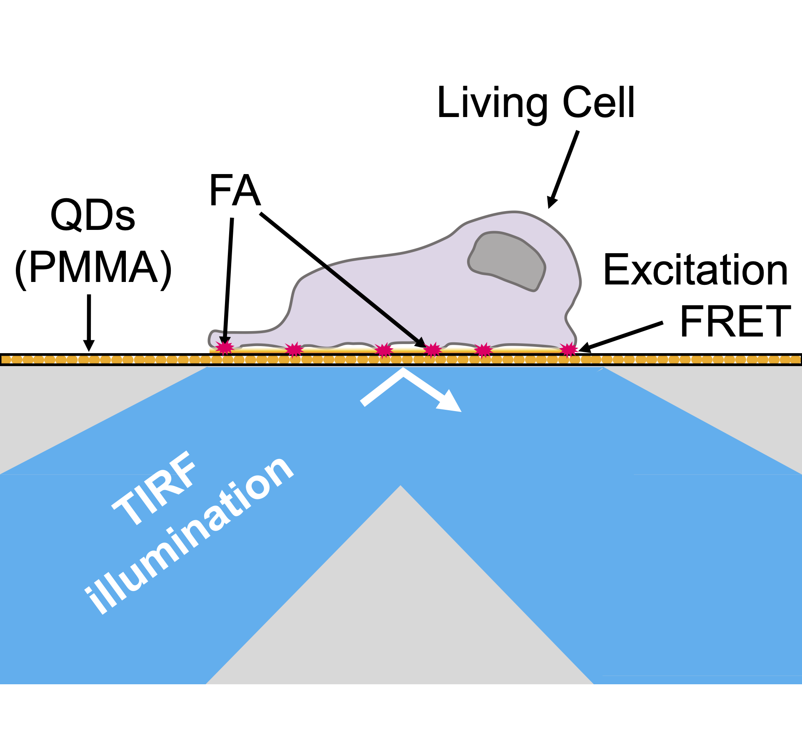 Figure 0.1: Illustration of the excitation part of
NEF imaging setup principle, with QDs embedded in PMMA.
Winckler et al. (2010), J. Phys. Chem. Lett. 1.16 . 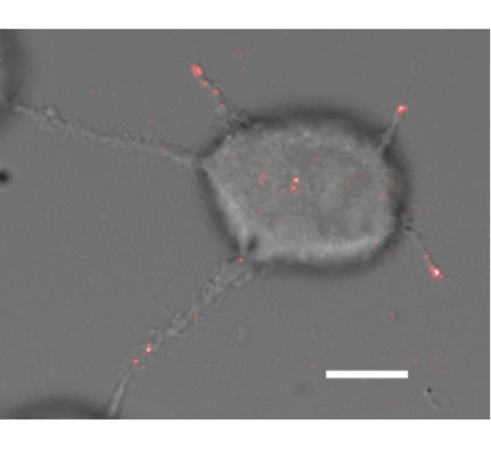 Figure 0.2: Superposition of DIC image of MCF-7 cell
and FRET signal indicating focal adhesions. Scale bar: 10 µm.
Winckler et al. (2010), J. Phys. Chem. Lett. 1.16 . 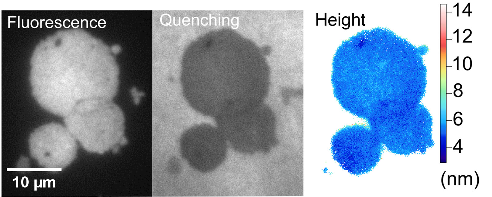 Figure 0.3: NEF acquisitions and height
cartography of substrate - lipid membranes.
Riachy et al. (2018), ACS Photonics 5.6 . 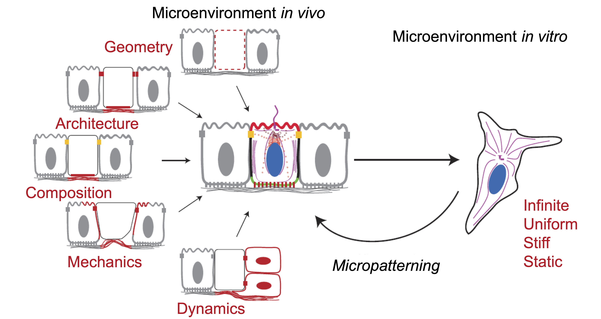 Figure 0.4: The cell microenvironment in situ and in vitro.
Micropatterning to mimic physiological environments.
Théry (2010), J. Cell. Sci. 123.24 . -
-
PhD overview
1. When 2 emitting molecules form a donor-acceptor pair, which are brought together under the right conditions, FRET (Förster Resonance Energy Transfert) is obtain – Figure 1.1. This can be understood as the opening of a non-radiative excitation pathway for the donor, combined with the opening of non-radiative excitation pathway for the acceptor. It is not a process of absorption of a fluorescence photon from the donor by the acceptor, giving rise to a secondary emission: it is a dipole-dipole coupling, directly between the molecules.
To be able to use that phenomenon, I've first build a TIRF optical setup with 2 laser sources (458 for the donor & 633 nm for the acceptor). This set up does not use a prism to obtain the total internal reflection, but a rotating mirror – Figure 1.2. TIRF illumination allows to limit the excitation to the ventral part of cells, an advantage both in terms of preserving the studied cells in general, and the stock of acceptors diffusing in the cell membrane in particular – Figure 1.3. It has been extensively caracterized to evaluate the laser irradiance ; to calibrate the correspondance between the angle θc with the sample and the angle αc of the rotating mirror ; and to select the detection channels adapted for NEF imaging – Figure 1.4.Figure 1.1: General illustration of FRET phenomena. - 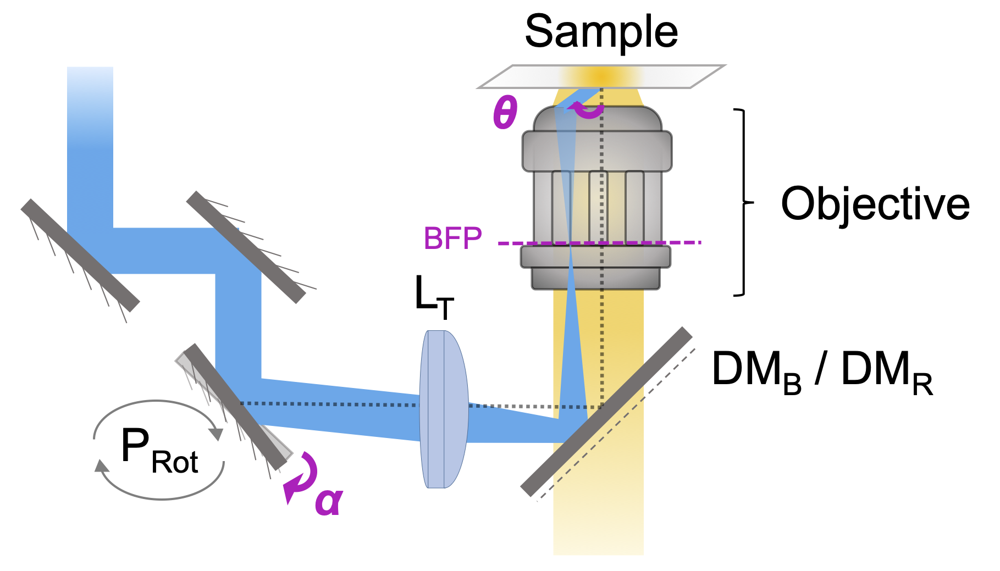 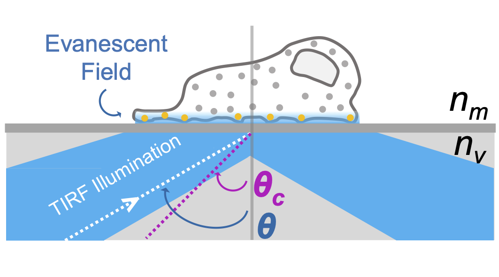 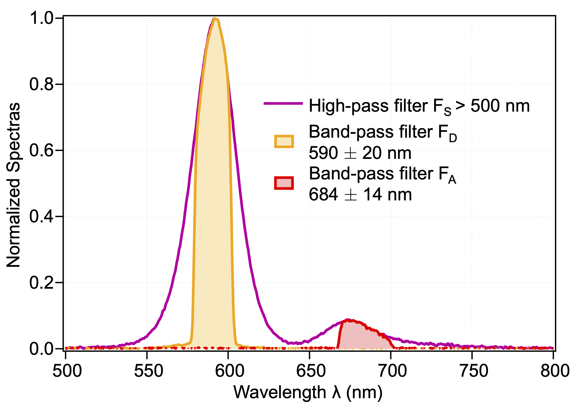
-
Figure 1.2: TIRF optical setup.
Focus on the sample illumination.Figure 1.3: Evanescent field when θ > θc.
Figure 1.4: Spectral characterization
of filters for imaging. -
2. I've learnt how to synthetize QDs using the "Cao" method for the cores (CdSe) and the SILAR approach to obtain thick mixed shells (/CdS/CdZnS/ZnS). QDs are semiconductors nanocrystals which have 2 main interesting properties to note here. Firstly, their emission spectrum is primarily a function of their size – Figure 2.1. Secondly, their absorption and emission spectras are asymetrical – Figure 2.2 – which is particularly intersting in the context of FRET: using a laser excitation as far as possible of the acceptor absorption spectrum minimize direct excitation (better signal to noise ratio) and maximize donor excitation.
To adjust the adsorption of QDs onto glass sufaces, various ligands exchanges have been used. These QDs have been caracterized spectrally in colloidal solutions and after their adsorption onto glass surfaces, which allowed me to affirm that the QDs ligands in solution have no influence on the spectral emission properties once the QDs are functionnalized onto the glass subtrates. In solution, I've also done measurements of emission lifetimes and evaluations of the Quantum Yield – Figures 2.4 et 2.5. The QY estimation of the cores φc doesn't rely on the comparison with a known emitter or an integration sphere: it is based on the spectral data and knowledge of the theoretical models of the electronic fine structure of the nanocrystals – Figure 2.3.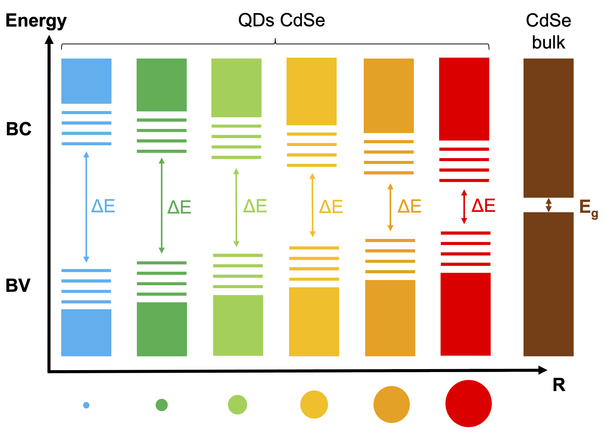 Figure 2.1: Illustration of the size-dependant emission properties of QDs. 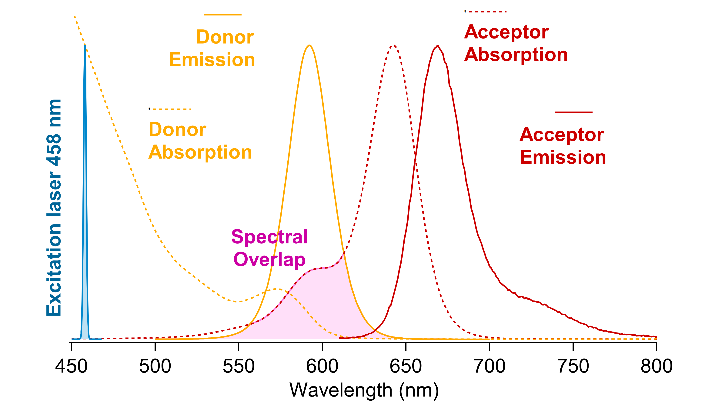 Figure 2.2: Spectral interest of having QDs as FRET donors. - 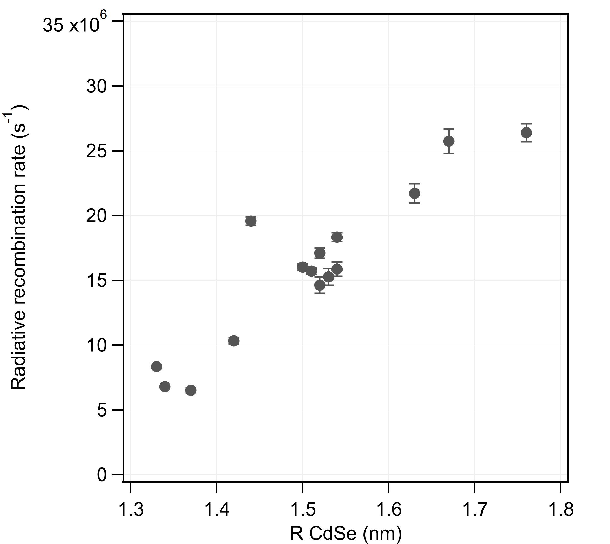 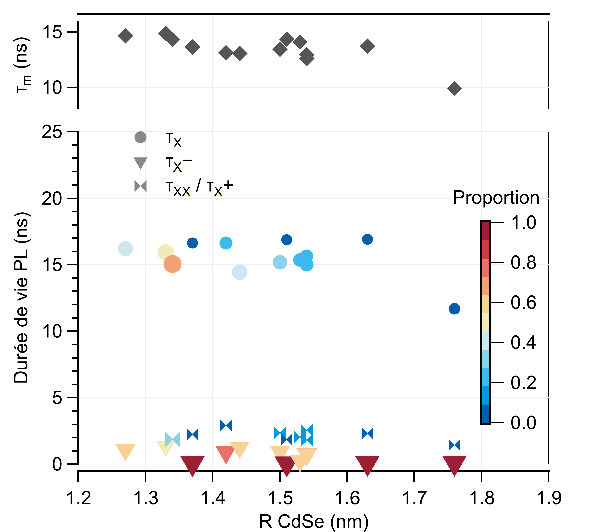 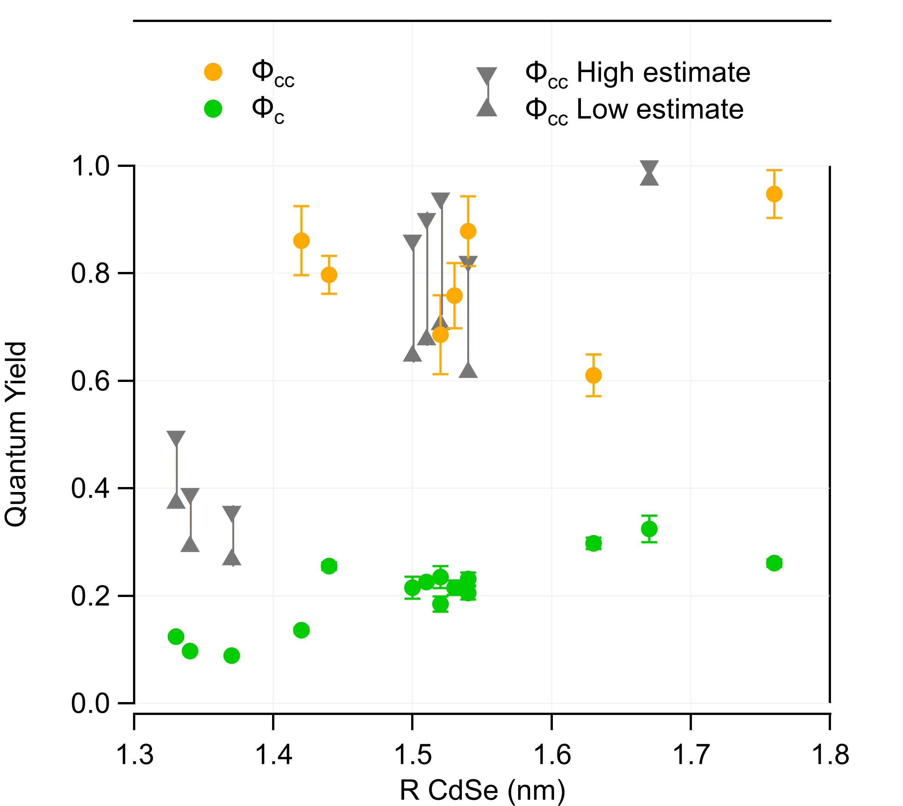
-
Figure 2.3: Radiative rate calculations. Figure 2.4: PL Lifetimes measurements.
Figure 2.5: Quantum Yield estimations. -
3. The protocol for functionalization of glass substrates has been initiated during the PhD of L. Riachy. This protocol has been enriched by taking advantage of my know-how in terms of ligand exchange, and I have carried out a thorough characterization of the obtained surfaces. The obtained QDs monolayers can reach high surfacic densities - more than 3000 QDs/µm2 - which is essential to adapt the laser irradiance or the acquisition time in the context of NEF imaging – Figure 3.1.
As the quantum dots are covalently bonded to the glass surface via silanes, the functionalization proves to be very strong (resisting ultrasonic treatment for example), which allowed us to show the relevance of combining this bottom-up approach with a top-down pre-microstructuration by UV photolithography – Figure 3.2. This method uses the photo-sensitive resin S1813 G2 and hijacks Alvéole's PRIMO device, designed for cell and hydrogel micropatterning, which relies on the use of a digital micromirror device (DMD). The latter allows for easily adpatable and scalable maskless photolithography, where patterns designed on software like Inkscape are projected directly onto the substrate. With a x10 objective, a surface of 4,6×1,72 mm2 can be illuminated without loss of focus in a matter of just several seconds, with total liberty in the design of the patterns – Figure 3.3. The resulting QDs micropatterns were of course characterized, and the maximum resolution was established as ∼2 µm – Figure 3.4.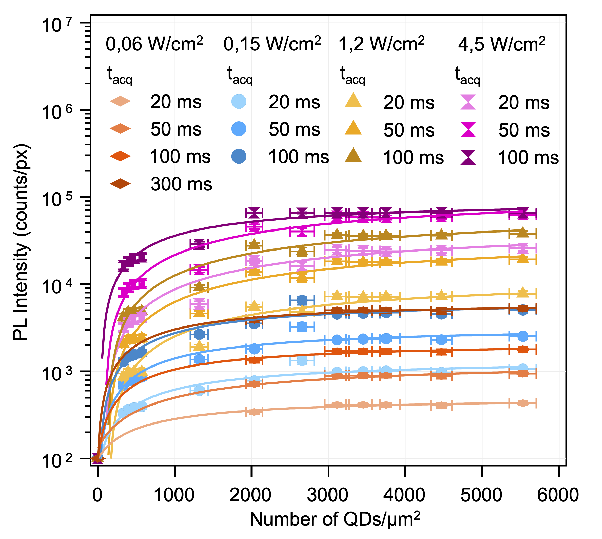 Figure 3.1: Relation between QDs monolayer photo-
luminescence & QDs surface density of the monolayer. 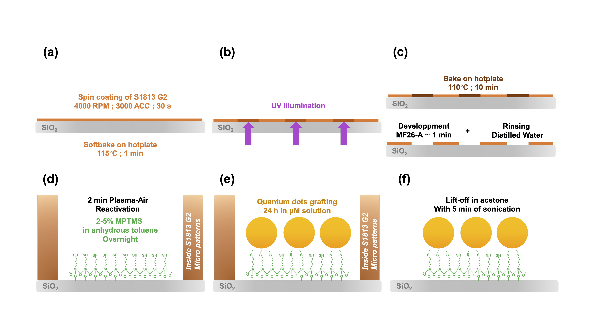 Figure 3.2: Protocol for QDs micropatterning. - 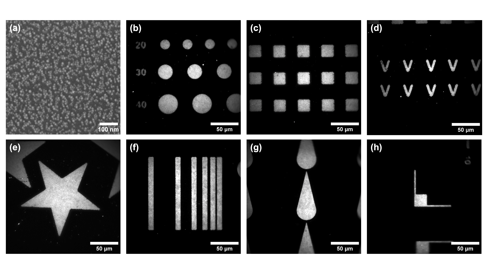 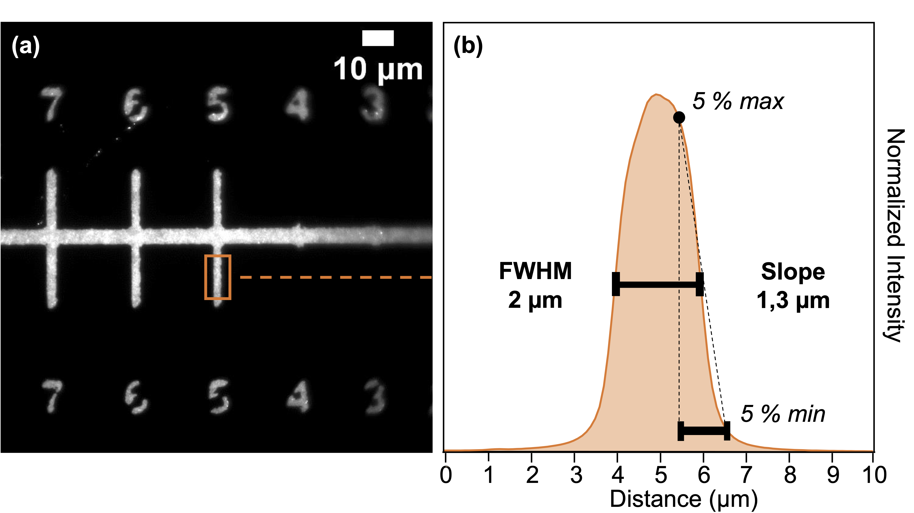
-
Figure 3.3: (a) MEB image of a QDs monolayer (b-h) QDs micropatterns. Figure 3.4: Resolution of QDs micropatterns with x10 PRIMO. -
4. To biofunctionnalize our QDs micropatterns, we chose imidazole as an anchoring function, through the use of histidines or more directly of imidazole rings, thus allowing a specific and stable attachment to the zinc surface of the quantum dots via the formation of a coordination complex – Figure 4.1. This approach has in fact already been employed for QDs in colloidal solution and even for the immobilization of gold NPs or QDs and onto surfaces. The Im-AF647 ligand was used as a test platform to demonstrate the feasibility of conducting a NEF imaging study. The initial experiments, performed in solution, provided data to aid in the development and interpretation of the demonstration experiment on microstructured QDs surfaces – Figure 4.2.
The different configurations with and without FRET acceptor were characterized spectrally and by imaging, which allowed me to expose the relevance of the previously mentioned TIRF optical setup. By accurately determining the background noise from the spectral spillover signal from the QDs into the acceptor detection window, and from the direct excitation of the acceptor at 458 nm, I demonstrated that the spectral selection ([672-696] nm) and preferred irradiance regime (0,9 W/cm2 @ 458 nm) allow for the recording of images with 99% of the signal coming from FRET – Figure 4.3. Using a variety of methods to determine acceptor/donor ratios and FRET efficiency, we found close proximity in the different results obtained.
Finally, emission of the Im-AF647 ligand allowed us to characterize a method for passivating the glass surface of our substrates in order to optimize the specificity of adsorption of our ligands chelating to quantum dots. This element was necessary to be able to perform cellular micropatterning via micropatterns of QDs[His-RGD].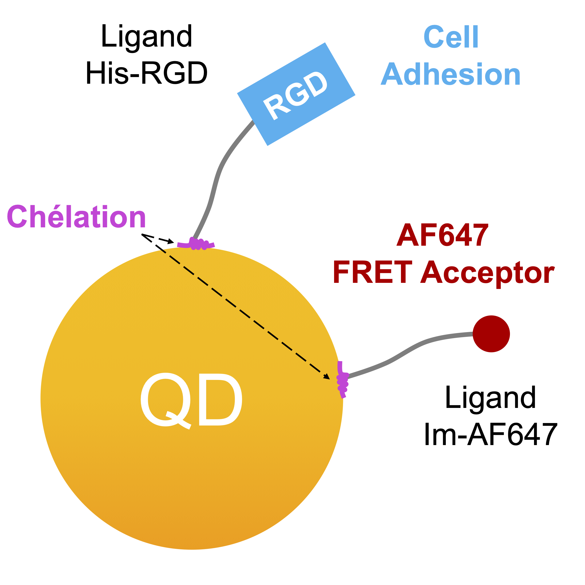 Figure 4.1: Functionnal illustration of the chelating ligands. 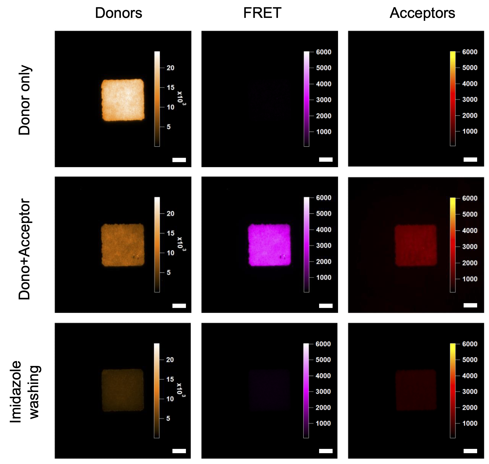Figure 4.2: TIRF images of QDs micropatterns
with and without Im-AF647 ligand. Scale bar: 10 µm. - 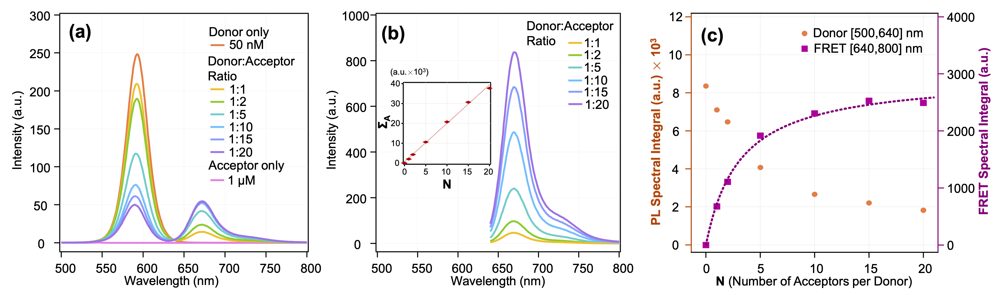
-
Figure 4.3: Spectral signal of QDs[MPA] and Im-AF647 in solution. (a) Signal at 458 nm excitation. (b) Signal at 633 nm excitation. Insert: spectral integral of the signal to demonstrate the linear increase in the presence of acceptors. (c) Spectral Integrals of traces showed in (a). FRET signal evolution fitted by a saturation curve (Langmuir type) to obtain the affinity constants between our QDs and the Im-AF647 ligand. -
5. I had the opportunity to test NEF imaging in "real-world" cell imaging situations. The surface ligand His-RGD, introduced just before, was able to be effectively used to promote specific cell adhesion on our QDs microstructures – Figure 5.1. This was an opportunity to show the importance of the design of the micropatterns, as the U87-EGFR-WT cells used showed difficulties in spreading well, compared to what we had observed on homogeneous surfaces.
This is not the only difficulty: the choice of a monolayer of QDs without an immobilization matrix – acting as a protective layer – proved to be double-edged. While this effectively allows direct bioconjugation of our FRET donors (QDs), it also leaves them exposed to unwanted adsorption phenomena. Our first choice of cell labeling, employing an aptamer conjugated to a FRET acceptor (Alexa Fluor 647), thus highlighted this limitation. One way to circumvent these problems would be to employ upstream labeling, as I was able to demonstrate with RPE-1 and WPMY-1 cells, DiD-labeled prior to incubation on our 2D microstructured surfaces – Figure 5.2.
Finally, I obtained encouraging preliminary results on the potential of combining NEF imaging with super-resolution methods based on computation processing of emission fluctuations (SRRF), allowing us to consider future more advanced studies on the localization and dynamics of adhesion focal points – Figure 5.3 to 5.7.Figure 5.1: Demonstration of cell micropatterning on QDs. 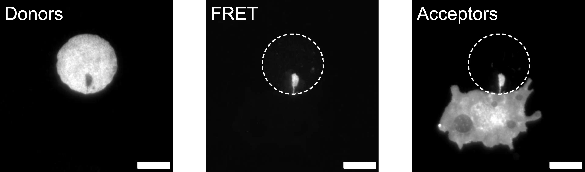 Figure 5.2: Demonstration of FRET on RPE-1 living cells. Scale bar: 10 µm. - 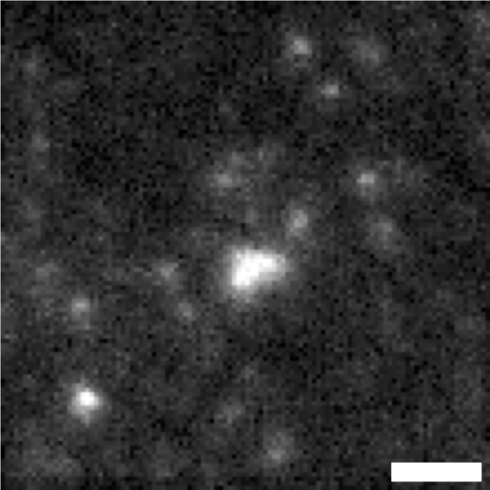 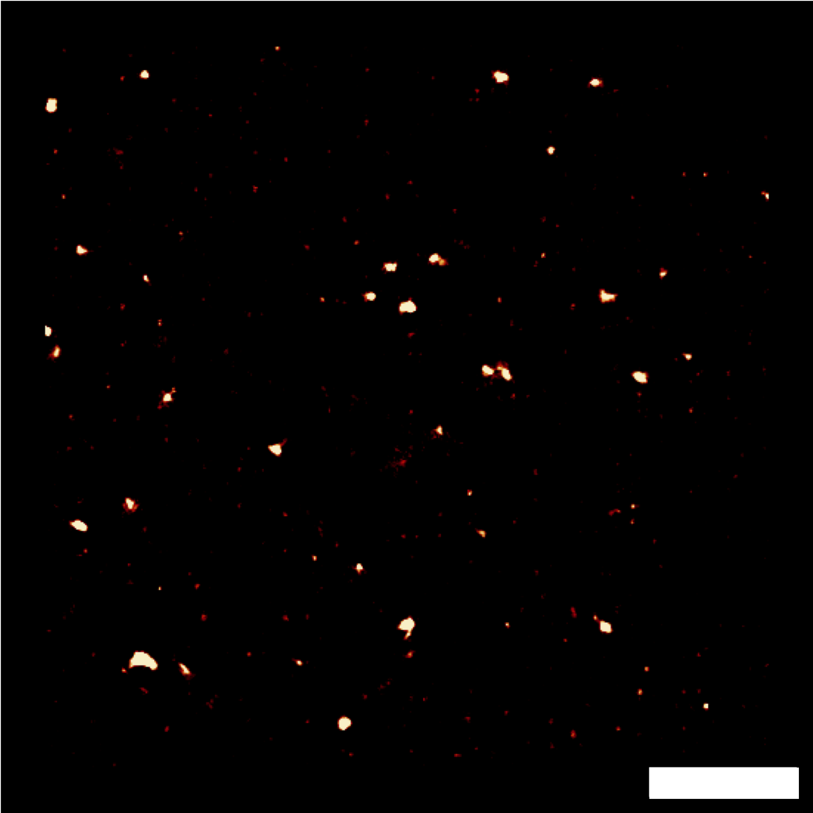 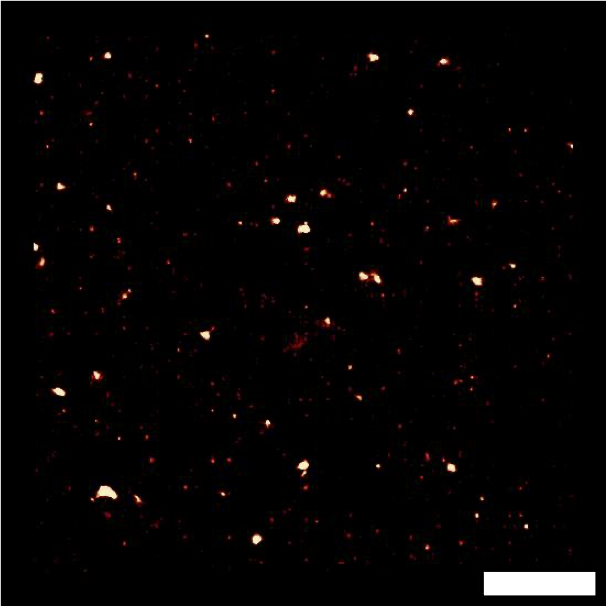 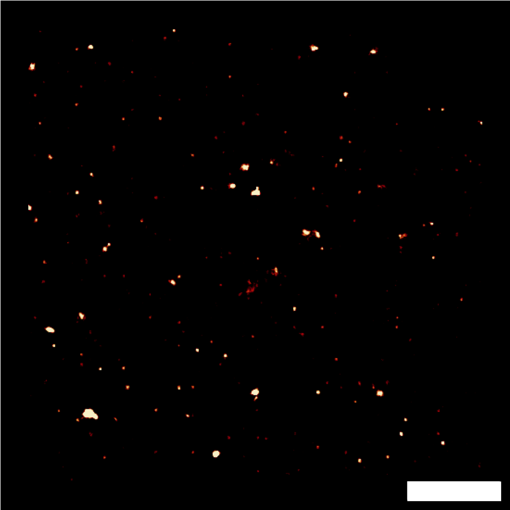
-
Figure 5.3: Fluctuations of FRET signal. Scale bar: 2 µm. Figure 5.4: Classical average of 25 images.Figure 5.5: Image by SRRF algorithm (1000 img).Figure 5.6: Image by SRRF algorithm (500 img).Figure 5.7: Image by SRRF algorithm (100 img). -
6. Finally, as I was able to test various alternatives of realization for the various steps of the QDs micropatterning process developed during my PhD, I launched a comparative life cycle analysis of them to rigorously evaluate the ecological gains of these various adaptations of the protocol. This is partly beyond the scope of my PhD, and is currently underway.
-
Project Funding
This PhD project was at the intersection of the nanosciences, biophysics, and optics fields. It was funded under the name SpaceInt by Aube Departmental Concil (CD10) and European Regional Development Fund (ERDF) for the 2019-2022 time period.

-
Partners
It was hosted at University of Technology of Troyes (UTT) under the supervision of Assistant Professor Cyrille Vézy and Associate Professor Rodolphe Jaffiol, in the L2n (Light, nanomaterials, nanotechnoly) laboratory.
It involved a collaboration between L2n and the Laboratory of Physics and Material Science (LPEM) of the École supérieure de physique et chimie industrielle de la ville de Paris (ESPCI Paris), and the Laboratory of Bio-imaging and Pathologies (LPB) of the University of Strasbourg.